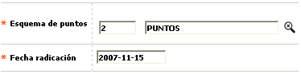

Novedad esquema de puntos
En este formulario invocado desde la opción ingreso de novedades, (issuer) la entidad puede modificar o adicionar la información el esquema de puntos al que pertenece una tarjeta

Descripción de campos
Esquema de puntos |
Campo obligatorio que posee lista de valores de la cual se puede seleccionar el esquema de puntos que se desea asociar a la tarjeta. |
Fecha de radicación |
En este campo obligatorio se registra en formato YYYY-MM-DD la fecha en la cual se solicitó el cambio de esquema de puntaje y que puede ser una fecha anterior a la actual del sistema, facilitando el ingreso de novedades de fechas anteriores. |